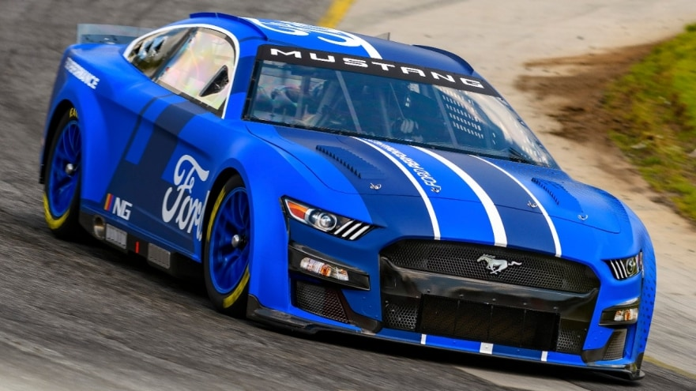
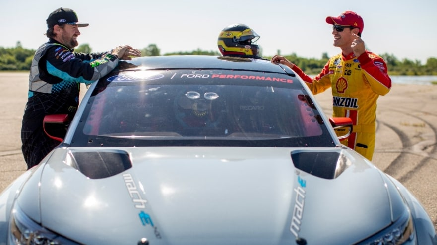
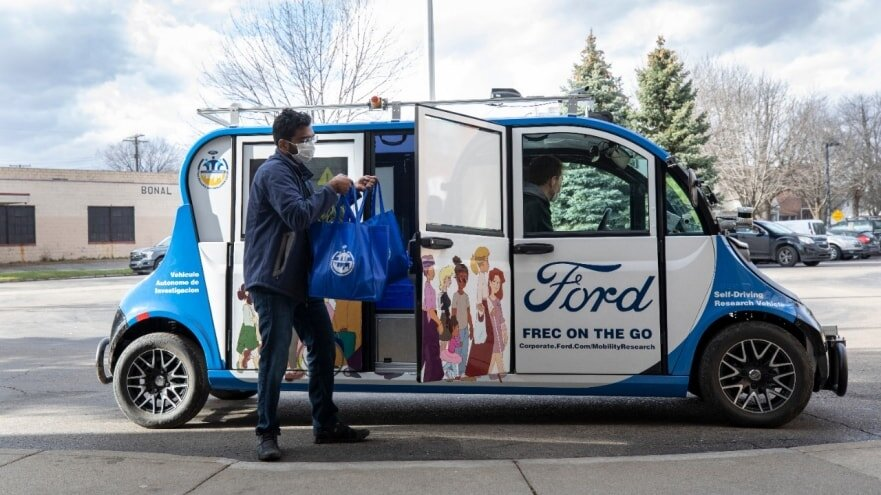
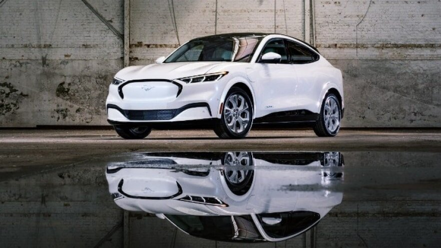

NEWS
Ford's first factory fully electric prototype
It won’t hurt your ears and doesn’t use a drop of fuel, but it’s projected to crush the quarter-mile in the low-8-second range at more than 170 mph.
For the first time ever, Ford Performance introduces a one-off Mustang Cobra Jet factory drag racer with all-electric propulsion. More ...

2022 next gen Mustang poised to help drive nascar cup series
Investors piled into technology giants such as Amazon, Alphabet and Microsoft on Friday, driving the tech-heavy Nasdaq to one of its biggest one-day jumps this year. More ...

Race car debuts
Race fans and Mustang enthusiasts will get their first chance to see the NASCAR Next Gen Mustang on August 2 at its public unveiling.
Until then, Ford Performance shares this taste of the car’s first laps around historic Martinsville Speedway, accompanied by the thunderous soundtrack of a powerful Roush Yates Ford V8 racing engine. More ...

Ford brings fresh food to Southwest Detroit residents
Ford is launching an autonomous fresh food delivery pilot, which is expected to bring 10,000 pounds of fresh food to the doorsteps of mobility challenged senior citizens in need in Southwest Detroit
The service uses a low-speed autonomous shuttle upfitted for food delivery running along a fixed route in the Michigan Central impact area, where Ford is researching mobility innovation More ...

Mustang Mach-e
The 2022 Mustang Mach-E is now available for order with a starting MSRP of $43,895.
The 2022 Mustang Mach-E California Route 1 has an EPA estimated-range of 314 miles with an extended range battery and RWD*. More ...